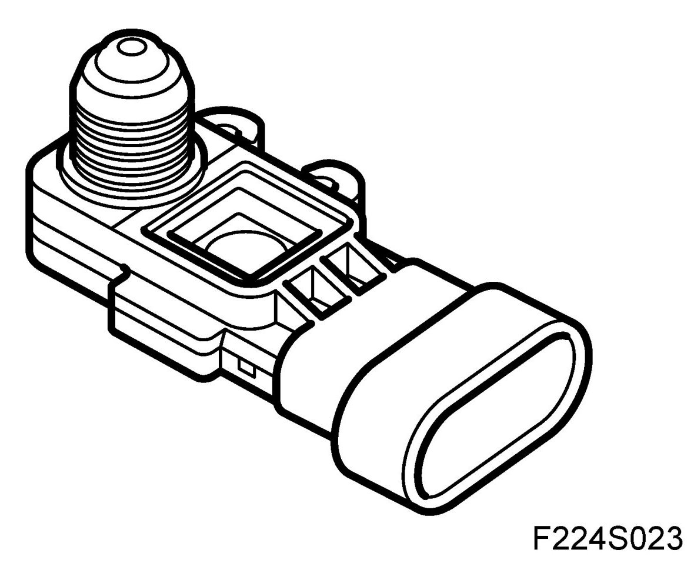
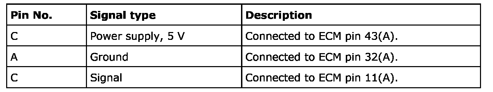
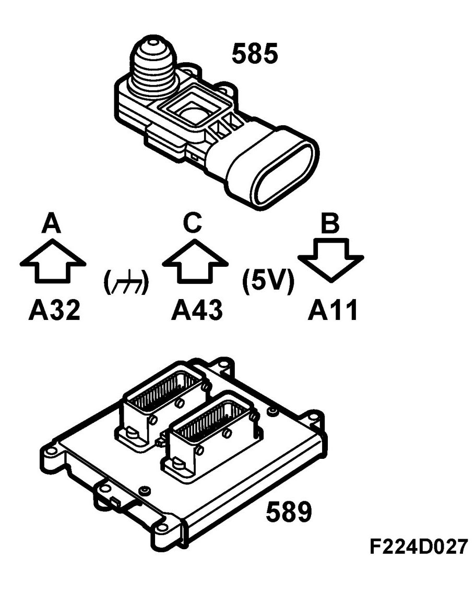
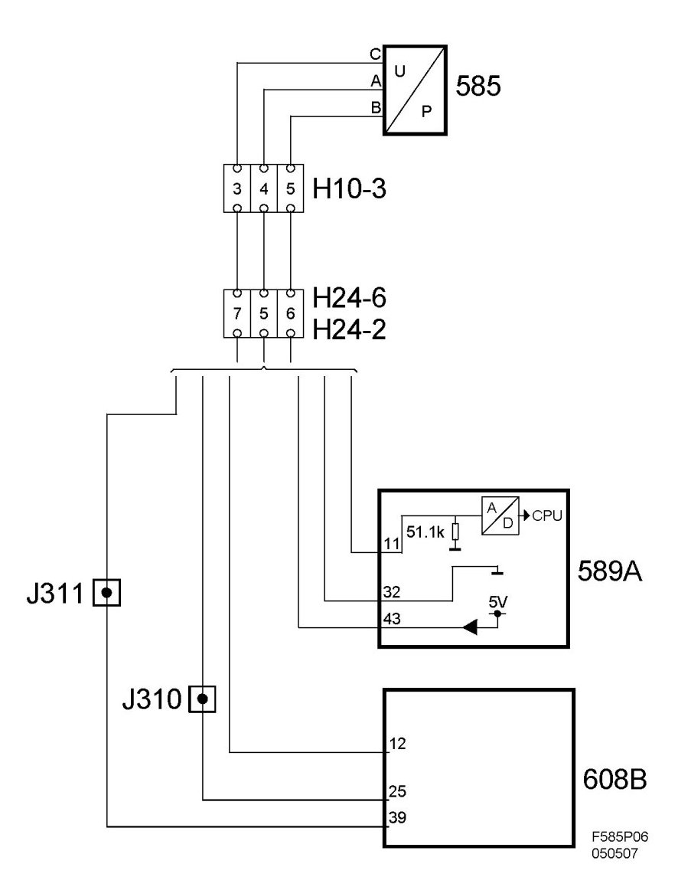

Pressure Sensor, EVAP (585)
Pressure Sensor, EVAP (585)
Location
Pressure sensor, EVAP (585)
Main task
The pressure sensor is used for onboard diagnostics to detect leakage in the purge system.
Type

Connection



Based on the pressure difference between the tank and atmosphere, the pressure sensor yields a proportional voltage to control module pin 11(A). The pressure sensor value is adapted to 0 kPa when the ignition is switched on provided coolant temperature is less than 40 degrees C and fuel level is less than 50 liters.